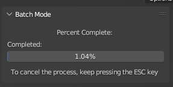

Save
This section of the addon is dedicated to the background saves, the export, and the creation of 360° backgrounds from a scene.
There is also a section to manipulate the user library.
Tip
You must be in User Library to be able to manipulate and save your backgrounds!
{kind=link}
Export Image
If in the current scene there is a World and in the nodes of the world there is one or more images in the nodes of type “TEX_ENVIRONMENT” This button allows you to export the image / s and save them in the chosen directory.
Save Type
This area allows you to choose 3 types of saving options:

Note
Before proceeding with the save, it is necessary to create a new category or select an existing one in the User Library. To do this, you will find here the section dedicated to the manipulation of the User Library: Library Tools
Save Current Background
This Options allows you to save the current background into the User library. The user library is your personal library, where you can save your own backgrounds.
To proceed with the save, you must press the “Save Background” button, a popup will appear that you can see below:

- Background Name:
The name of the background to be saved. You can choose the name you want, but it must be unique into the current category.
- Overrite if name exists:
If you have already saved a background with the same name, this option allows you to overwrite it.
- Save Into Category:
This option allows you to choose the category where to save the background. (Must be created before)
When everything is ready, select “Yes” and press the “Ok” button to proceed with the save.
If the background type is based on Images, HDRi Maker will try to save only the main image. Otherwise, the whole world node tree will be saved (All world node tree nodes).
Batch From Folder
This option allows you to save in Batch (That is, many backgrounds at once). If you have a folder with many HDR files, or with Blender files with a world already set, this option does the rest.
To proceed, you must select the folder where the files to be saved are located (Choose the source folder button), and then press the “Batch Save” button.
Tip
You can find a video tutorial on how to save in batch almost 100 images: Batch Save

Once the “Batch Save” button is pressed, a dialog box will appear that will allow you to check which files have been added to be processed and saved.

You can remove a file from the list before proceeding, you can click on the button with the “X”, it will disappear from the list and will not be saved in the batch process.
Tip
Even the .blend files can be added to the list, HDRi Maker will try to load the world in the file (If present) and save it in your User Library. The operation can succeed only if there is a world already set in the .blend file.
During the Batch process, a small panel will appear in HDRi Maker with the name “Batch Mode” where the progress of the save will be shown.
You can press the ESC button to stop the process.
{kind=link}
Note
The interface should lock for a few seconds during the batch process. About 3 seconds of waiting between one save and the other have been programmed, to be able to interact and possibly stop the process during those 3 seconds. This is because a Blender Modal Operator has been used.
Save 360° Background
Save the scene in an image taken from the point of view of the 360° camera. This option is useful to create panoramic images to be used as backgrounds also in other programs. The images created can also be exported in HDR format

Tip
You can find a video tutorial on how to create a 360° background with HDRi Maker: Create HDR from scene
This is useful if you have particularly complex scenes and want to create a 360° background to use in other projects. In many cases this saves the rendering time, because you will not need the original scene, which usually includes a very high Polygon Faces and Vertices count.
Once this option is chosen, a “Add 360 sphere” button will be shown, this is used to place a sphere in the scene that will be the exact point from which the 360° image will be taken. (Like te image above)
{kind=link}
Tip
I suggest taking the picture between 1.5 and 2.5 meters high from the ground. In order to have a point of view of the height similar to that of human eyes.
Once the 360 sphere is added to the scene:
- 360 Cam On Cursor:
This option allows you to place the 360 sphere on the cursor position.
- Find Camera:
This button, places the point of view in front of the sphere, if for some reason you can’t find where you placed it.

Panorama Save Panel
You must press the “Panorama Save” button, a popup will appear that you can see below:
{kind=link}
- Background Name:
The name of the background to be saved. You can choose the name you want, but it must be unique into the current category.
- Custom Size:
This option allows you to insert a custom size expressed in k, 1 = 1k (1024x512), 2 = 2k (2048x1024), 4 = 4k (4096x2048), etc. (Use only Integers)
- Use HDRi Maker Render Attributes:
If active, use the best parameters for the precompiled 360 render. If disabled, use the current scene parameters. (Recommended)
- Size Selctor:
This option allows you to choose a size from a list of precompiled sizes.
- Use Denoising:
If active, use the denoising filter to reduce noise in the render. More options will be available in the “Denoising” section if this option is active.
- Render Samples:
This option allows you to choose the number of samples to be used in the render. (Recommended 128 or more) The higher the number of samples, the cleaner and more detailed the render will be, but the longer it will take to be completed.
- Ok Button:
This button allows you to start the 360° render.
Note
During the rendering, a Blender window will open with the rendering in progress. This window is necessary to be able to interrupt the rendering if necessary. Do not close this window, otherwise the rendering will be interrupted and you will not be able to save the background. When the render is finished, a confirmation message will be shown in the same window. !! do not interrupt the rendering !!
During Rendering:
{kind=link}
After Rendering completed:
{kind=link}
Library Tools
This submenu is dedicated to the manipulation of the User Library (The library where you can save your Backgrounds).

Add New Category
This option allows you to add a new category to the User Library. It is not allowed to add more than one category with the same name (Lowercase and uppercase do not make a difference)
Move Background to Category
This option allows you to move a background from one category to another. (If the name of the background exists in the destination category, the background will not be moved)
Rename Background
This option allows you to rename a background. If the name is already present in the current category, the operation will not be completed.
Rename Category
This option allows you to rename a category. If the name is already present in the User Library, the operation will not be completed.
Open Current Folder
For convenience, this button opens the current folder of the user library, so that you can access and check the saved files.
Danger Zone
This section contains the options to delete categories and backgrounds from the User Library.
Warning
The deletion of a category will also delete all the backgrounds contained in it.